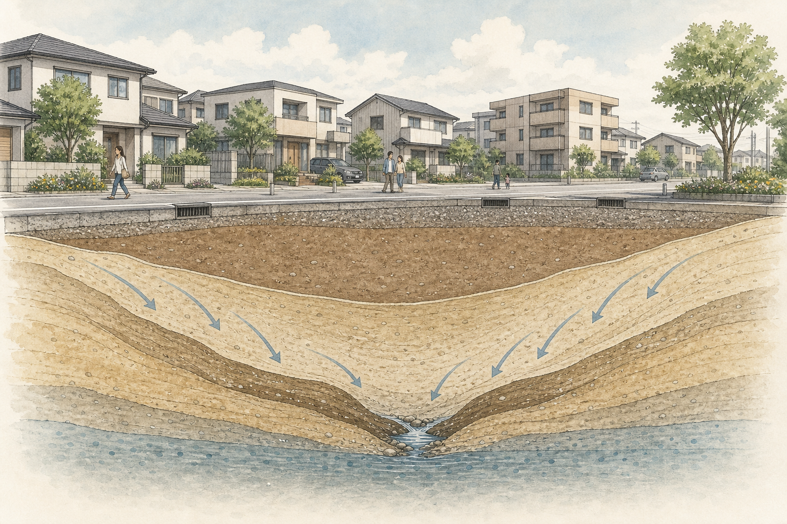

区広報世田渋谷区
第218号
今月の特集
本形町を歩いて、地形を確かめました
古い地図を片手に本形町を歩き、道の曲がりやわずかな高低差を確かめました。古地図と現在のまちを見比べながら、「下原谷戸」の痕跡をたどります。

現在の道路・住宅地造成された地盤下原谷戸造成前の地形旧水路地下水区広報アーカイブ
公開日：2022年6月15日
区広報世田渋谷区
第218号
今月の特集
古い地図を片手に本形町を歩き、道の曲がりやわずかな高低差を確かめました。古地図と現在のまちを見比べながら、「下原谷戸」の痕跡をたどります。

現在の道路・住宅地造成された地盤下原谷戸造成前の地形旧水路地下水このWebサイトの内容はフィクションであり、実在のお店・人物・団体とは一切関係がありません。